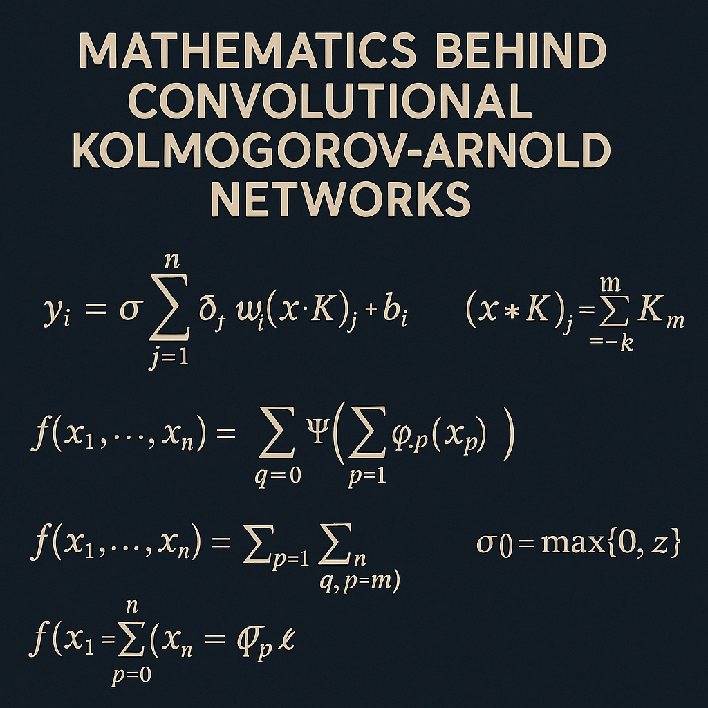

The Mathematics Behind Convolutional Kolmogorov-Arnold Networks

Introduction
Convolutional Kolmogorov-Arnold Networks (CKANs) represent a revolutionary approach to neural network architecture that combines the theoretical foundations of the Kolmogorov-Arnold representation theorem with the practical advantages of convolutional operations. Unlike traditional Convolutional Neural Networks (CNNs) that rely on fixed linear transformations followed by nonlinear activations, CKANs replace these components with learnable univariate functions, offering a more flexible and theoretically grounded approach to function approximation.
The Kolmogorov-Arnold Representation Theorem
Theoretical Foundation
The Kolmogorov-Arnold representation theorem, proved by Andrey Kolmogorov in 1957 and later refined by Vladimir Arnold, states that any multivariate continuous function can be represented as a superposition of continuous functions of a single variable.
Theorem (Kolmogorov-Arnold): For any continuous function \(f: [0,1]^n \to \mathbb{R}\), there exist continuous functions \(\phi_{q,p}: [0,1] \to \mathbb{R}\) and \(\Phi_q: \mathbb{R} \to \mathbb{R}\) such that:
\[ f(x_1, x_2, \ldots, x_n) = \sum_{q=0}^{2n} \Phi_q\left(\sum_{p=1}^{n} \phi_{q,p}(x_p)\right) \]
where:
- \(q\) ranges from \(0\) to \(2n\)
- \(p\) ranges from \(1\) to \(n\)
- The functions \(\phi_{q,p}\) are universal (independent of \(f\))
- Only the outer functions \(\Phi_q\) depend on the specific function \(f\)
Implications for Neural Networks
This theorem suggests that instead of using traditional linear combinations followed by fixed activation functions, we can construct networks using compositions of univariate functions. This forms the theoretical backbone of Kolmogorov-Arnold Networks (KANs).
From KANs to Convolutional KANs
Standard KAN Architecture
A standard KAN layer transforms input \(\mathbf{x} \in \mathbb{R}^{n_{in}}\) to output \(\mathbf{y} \in \mathbb{R}^{n_{out}}\) using:
\[ y_j = \sum_{i=1}^{n_{in}} \phi_{i,j}(x_i) \]
where \(\phi_{i,j}: \mathbb{R} \to \mathbb{R}\) are learnable univariate functions, typically parameterized using splines or other basis functions.
Convolutional Extension
The challenge in extending KANs to convolutional architectures lies in maintaining the univariate nature of the learnable functions while incorporating spatial locality and translation invariance. CKANs achieve this through several key innovations:
Mathematical Formulation of CKANs
1. Convolutional KAN Layer
For a CKAN layer with input feature map \(\mathbf{X} \in \mathbb{R}^{H \times W \times C_{in}}\) and output \(\mathbf{Y} \in \mathbb{R}^{H' \times W' \times C_{out}}\), the convolution operation is defined as:
\[ Y_{i,j,k} = \sum_{c=1}^{C_{in}} \sum_{u=0}^{K-1} \sum_{v=0}^{K-1} \phi_{c,k,u,v}(X_{i+u,j+v,c}) \]
where:
- \((i,j)\) are spatial coordinates in the output feature map
- \(k\) is the output channel index
- \(c\) is the input channel index
- \(K\) is the kernel size
- \(\phi_{c,k,u,v}\) are learnable univariate functions specific to input channel \(c\), output channel \(k\), and kernel position \((u,v)\)
2. Univariate Function Parameterization
The univariate functions \(\phi\) are typically parameterized using B-splines or other basis functions. For B-splines of degree \(d\) with \(n\) control points:
\[ \phi(x) = \sum_{i=0}^{n-1} c_i B_i^d(x) \]
where \(c_i\) are learnable coefficients and \(B_i^d(x)\) are B-spline basis functions defined recursively:
\[ B_i^0(x) = \begin{cases} 1 & \text{if } t_i \leq x < t_{i+1} \\ 0 & \text{otherwise} \end{cases} \]
\[ B_i^d(x) = \frac{x - t_i}{t_{i+d} - t_i} B_i^{d-1}(x) + \frac{t_{i+d+1} - x}{t_{i+d+1} - t_{i+1}} B_{i+1}^{d-1}(x) \]
Activation Functions in CKANs
Learnable Activation Functions
Unlike traditional CNNs with fixed activation functions (ReLU, sigmoid, etc.), CKANs use learnable activation functions. These can be viewed as univariate functions applied element-wise:
\[ \text{Activation}(x) = \psi(x) \]
where \(\psi\) is a learnable univariate function, often parameterized as:
\[ \psi(x) = \text{SiLU}(x) + \sum_{i=0}^{n-1} a_i B_i^d(x) \]
The SiLU (Sigmoid Linear Unit) provides a smooth base function, while the spline terms allow for fine-tuning.
Training Dynamics and Optimization
Gradient Computation
The gradient of the loss function with respect to the spline coefficients involves the derivative of B-spline basis functions:
\[ \frac{\partial L}{\partial c_i} = \frac{\partial L}{\partial \phi} \cdot B_i^d(x) \]
For the derivative of the function itself: \[ \frac{\partial L}{\partial x} = \frac{\partial L}{\partial \phi} \cdot \sum_{i=0}^{n-1} c_i \frac{dB_i^d(x)}{dx} \]
Regularization Techniques
CKANs typically employ several regularization techniques:
Smoothness Regularization
\[ R_{\text{smooth}} = \sum_{i,j} \int \left(\frac{d^2\phi_{i,j}(x)}{dx^2}\right)^2 dx \]
Sparsity Regularization
\[ R_{\text{sparse}} = \sum_{i,j} \int |\phi_{i,j}(x)| dx \]
Total Variation Regularization
\[ R_{\text{TV}} = \sum_{i,j} \int \left|\frac{d\phi_{i,j}(x)}{dx}\right| dx \]
Computational Complexity Analysis
Parameter Count
For a CKAN layer with:
- Input channels: \(C_{in}\)
- Output channels: \(C_{out}\)
- Kernel size: \(K \times K\)
- Spline degree: \(d\)
- Control points per spline: \(n\)
The parameter count is: \[ \text{Parameters} = C_{in} \times C_{out} \times K^2 \times n \]
Compare this to traditional CNN: \[ \text{Parameters}_{\text{CNN}} = C_{in} \times C_{out} \times K^2 \]
Computational Complexity
The forward pass complexity for a single CKAN layer is: \[ O(H \times W \times C_{out} \times C_{in} \times K^2 \times n) \]
where \(H \times W\) is the spatial dimension of the output feature map.
Architectural Variations
1. Depthwise Separable CKANs
Inspired by depthwise separable convolutions, this variant separates the operation into:
Depthwise Convolution: \[ Y_{i,j,c} = \sum_{u=0}^{K-1} \sum_{v=0}^{K-1} \phi_{c,u,v}(X_{i+u,j+v,c}) \]
Pointwise Convolution: \[ Z_{i,j,k} = \sum_{c=1}^{C_{in}} \psi_{c,k}(Y_{i,j,c}) \]
2. Dilated CKANs
Incorporating dilation for larger receptive fields: \[ Y_{i,j,k} = \sum_{c=1}^{C_{in}} \sum_{u=0}^{K-1} \sum_{v=0}^{K-1} \phi_{c,k,u,v}(X_{i+d \cdot u,j+d \cdot v,c}) \]
where \(d\) is the dilation factor.
3. Residual CKANs
Combining residual connections with CKAN layers: \[ Y = \text{CKAN}(X) + \alpha \cdot X \]
where \(\alpha\) is a learnable scaling factor.
Approximation Properties
Universal Approximation
CKANs inherit the universal approximation properties of KANs. For any continuous function \(f: \mathbb{R}^n \to \mathbb{R}\) and any \(\epsilon > 0\), there exists a CKAN that approximates \(f\) within \(\epsilon\) accuracy.
Convergence Analysis
The convergence rate of CKANs depends on several factors:
- Smoothness of target function: Smoother functions converge faster
- Spline degree: Higher degree splines provide better approximation but may overfit
- Number of control points: More control points increase expressivity but computational cost
The approximation error for a function \(f\) with \(s\)-th order smoothness is bounded by: \[ \|f - \text{CKAN}(f)\|_\infty \leq C \cdot h^s \]
where \(h\) is the spacing between spline knots and \(C\) is a constant depending on \(f\).
Practical Implementation Considerations
Numerical Stability
CKANs require careful attention to numerical stability:
- Spline knot placement: Uniform or adaptive knot placement strategies
- Coefficient initialization: Proper initialization of spline coefficients
- Gradient clipping: Preventing gradient explosion during backpropagation
Memory Optimization
Several techniques can reduce memory usage:
- Lazy evaluation: Computing spline values on-demand
- Coefficient sharing: Sharing coefficients across similar functions
- Quantization: Using lower precision for spline coefficients
Comparison with Traditional CNNs
Expressivity
CKANs offer superior expressivity due to:
- Learnable activation functions
- Non-linear transformations in each connection
- Adaptive function shapes based on data
Interpretability
The univariate nature of CKAN functions provides better interpretability:
- Each function can be visualized as a 1D curve
- Function shapes reveal learned patterns
- Easier to understand feature transformations
Computational Trade-offs
Advantages:
- Better function approximation with fewer layers
- Interpretable learned functions
- Theoretical guarantees
Disadvantages:
- Higher computational cost per layer
- More parameters to optimize
- Longer training times
Future Directions and Extensions
Theoretical Advances
- Convergence guarantees: Developing stronger theoretical guarantees for CKAN convergence
- Optimal architectures: Finding optimal CKAN architectures for specific tasks
- Generalization bounds: Establishing generalization bounds for CKANs
Practical Improvements
- Efficient implementations: Developing more efficient CUDA kernels for CKAN operations
- Automated architecture search: Using neural architecture search for CKAN design
- Hardware acceleration: Designing specialized hardware for CKAN computations
Applications
- Computer vision: Image classification, object detection, segmentation
- Scientific computing: Solving partial differential equations
- Signal processing: Audio and video processing applications
Conclusion
Convolutional Kolmogorov-Arnold Networks represent a significant advancement in neural network architectures, combining solid theoretical foundations with practical convolutional operations. While computationally more expensive than traditional CNNs, CKANs offer superior expressivity, interpretability, and theoretical guarantees. As the field continues to evolve, we can expect further optimizations and novel applications of this powerful architecture.
The mathematics behind CKANs reveals a rich interplay between approximation theory, spline functions, and deep learning, opening new avenues for both theoretical understanding and practical applications in machine learning.